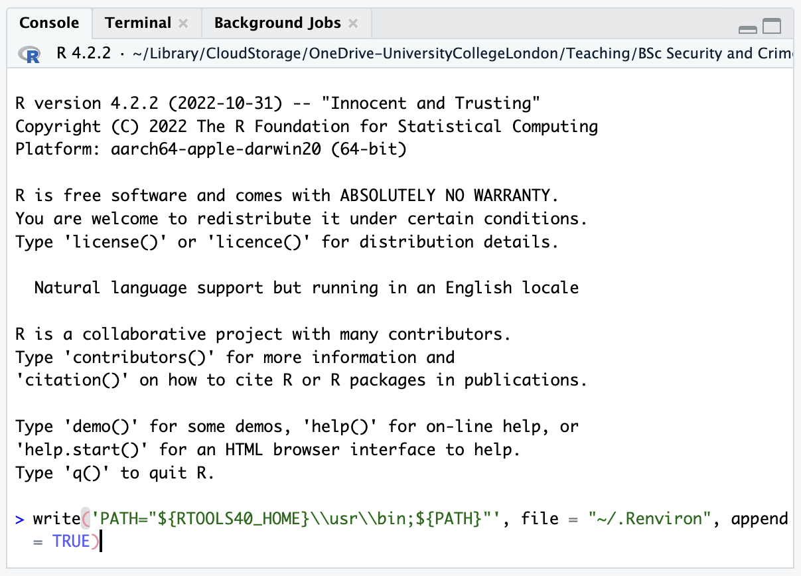
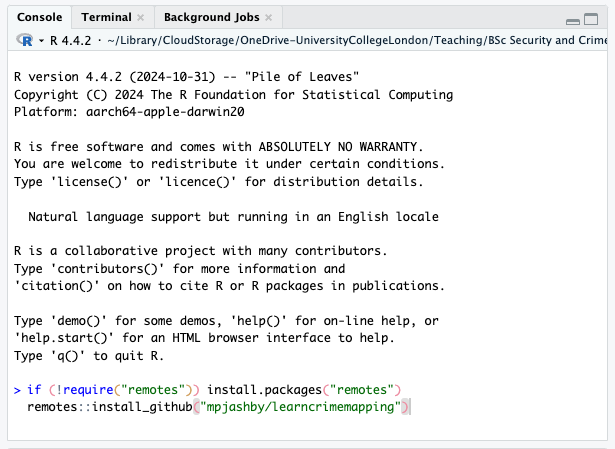

Install the software needed for this book
However you are going to use this book, you will first want to install the software that we will use to create crime maps.
Step 1: install R
The first step is to download and install R, a programming language designed for analysing and visualising data, including making maps. To install R, visit the R website and download R for either Windows or Mac, depending on what type of computer you are using. If you already have R installed on your computer, please update it to the latest release.
This video talks you through the process of installing R:
Step 2: install RStudio
The next step is to download RStudio, an app that you can use to work with the R programming language more efficiently. Download RStudio Desktop for your computer from the Posit website (that’s the company that makes RStudio) and install. If you already have RStudio Desktop installed on your machine, please update it to the latest release.
This video talks you through the process of installing RStudio:
Step 3: install RTools (Windows only)
If you are using a Windows computer you should install Rtools, which will be needed by RStudio for some of the code in this book. If you are using a Mac or Linux computer, you do not need to install Rtools.
To install RTools:
- Download the latest version from the R website and open the downloaded file.
- Follow the installation instructions (accept all the default options).
- Open RStudio.
- Find the panel (in the bottom-left) marked Console.
- Find the
>symbol at the bottom of that panel. - Copy and paste the following code to the right of the
>symbol:
- Press
Enter.
If you cannot install software on your computer
You may not be able to install software on the computer you want to use for crime mapping, or you may prefer not to for various reasons. In that case, you can run RStudio online using Posit Cloud. Posit Cloud is free for a certain number of hours each month, after which you can pay to continue using it.
Using Posit Cloud allows you to avoid the installation steps for R, RStudio and RTools above, but remember that since Posit Cloud operates online, you should not use it work on confidential or personal data unless you have the necessary permission to do so.
Set up R for crime mapping
As we will learn in subsequent chapters, most of the mapping capabilities in R are provided by add-on packages. To download and install the packages you will need to run the code included in this book:
- Open RStudio.
- Find the panel (usually in the bottom-left) marked Console.
- Find the
>symbol at the bottom of that panel. - Copy and paste the following code to the right of the
>symbol:
R Console
if (!require("remotes")) install.packages("remotes")
remotes::install_github("mpjashby/learncrimemapping")- Press
EnterorReturnon your keyboard.

Do you want to install from sources the package which needs compilation? – what should I do?
If you see a popup message appear asking Do you want to install from sources the package which needs compilation?, you can safely choose ‘No’.
Important
It will take a few minutes for the set-up process to finish. Once the process is complete, you will see the > symbol has appeared in the R Console again.